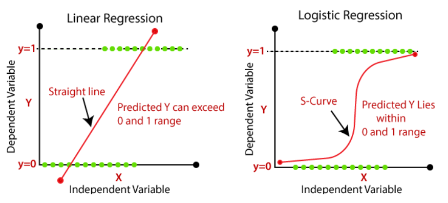
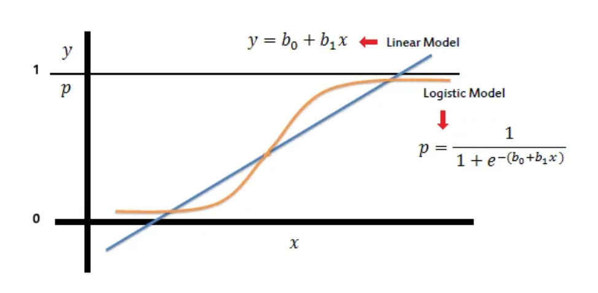
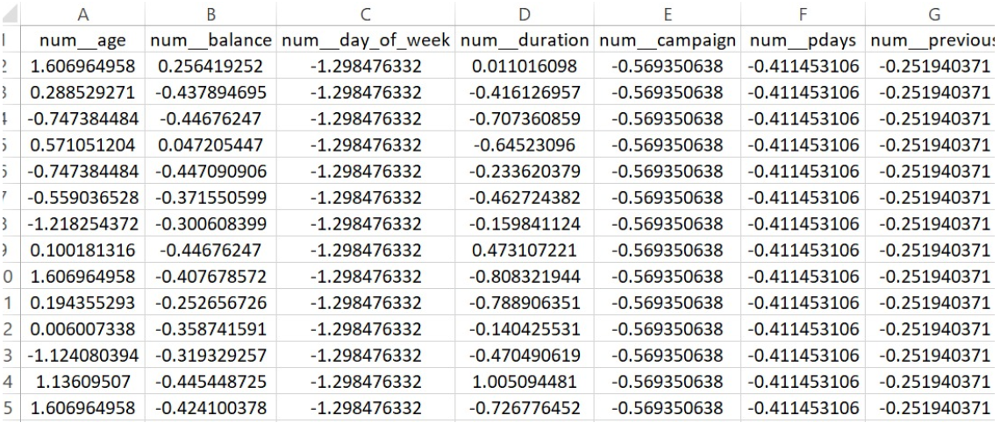

Linear regression is a method used to predict a continuous outcome (like price or score) based on input variables. It fits a straight line that best represents the relationship between inputs and the target, minimizing the difference between predicted and actual values. Logistic regression, on the other hand, is used for classification—it predicts the probability of a categorical outcome, usually binary like yes/no. It uses a similar mathematical structure to linear regression but applies a transformation to output probabilities instead of raw numbers. Both models use weighted inputs and are trained with optimization methods, but their goals and outputs are fundamentally different.
What is Logistic Regression?
Logistic regression is used to predict the probability of a categorical outcome, typically a binary one like “yes” or “no.” Instead of fitting a straight line, it uses a curve to map input values to probabilities between 0 and 1. These probabilities are then used to classify the input into one of two categories. Logistic regression is widely used for tasks like customer churn prediction, spam detection, and disease diagnosis. It’s valued for its simplicity, speed, and ability to output interpretable results.

Comparison between Linear and Logistic Regression prediction outputs.
Similarities and Differences Between Linear and Logistic Regression
Both linear and logistic regression use a linear combination of input features to make predictions and are easy to implement and interpret. However, linear regression is used for predicting continuous numeric values, while logistic regression is used for classification. Linear regression outputs raw numbers, while logistic regression converts outputs to probabilities and then categories. They also differ in how they are evaluated: linear regression uses error-based metrics like mean squared error, whereas logistic regression uses metrics like accuracy, precision, and AUC. Despite their differences, both models serve as fundamental tools in machine learning.
The Role of the Sigmoid Function in Logistic Regression
The sigmoid function is used in logistic regression to convert any number into a value between 0 and 1. This transformation allows the model to output probabilities, which are then used to classify inputs into categories. For example, a result of 0.82 means there’s an 82% chance that the input belongs to the positive class. Without the sigmoid function, the model would behave like linear regression and produce values outside the 0–1 range. The sigmoid is what makes logistic regression suitable for binary classification tasks.

S-curve output of logistic regression vs linear prediction line.
How Maximum Likelihood Is Used in Logistic Regression?
Logistic regression is trained using Maximum Likelihood Estimation (MLE). MLE finds the model parameters that make the observed outcomes most probable given the input data. It works by comparing the model’s predicted probabilities to the actual labels and adjusting the parameters to improve the fit. Unlike linear regression, which minimizes squared errors, logistic regression maximizes the likelihood of correct classifications. This makes MLE the key optimization method behind the learning process in logistic regression.
The dataset was first loaded and cleaned to separate input features (X) from the target variable (y). The target column contained categorical responses (“yes” and “no”), which were encoded into binary format using LabelEncoder, converting “yes” to 1 and “no” to 0. Next, the dataset was examined to distinguish between numerical and categorical features. This separation was essential for applying appropriate preprocessing techniques tailored to each model.
Two separate preprocessing pipelines were created—one for Logistic Regression and another for Multinomial Naive Bayes (MNB)—as both models have different requirements. Logistic Regression used StandardScaler to standardize numerical features and OneHotEncoder (with drop='first') to handle categorical variables, avoiding multicollinearity. For MNB, numerical features were scaled using MinMaxScaler to bring all values into the 0–1 range, which suits the assumptions of the Naive Bayes model. Categorical encoding remained the same across both pipelines.

PART OF THE DATASET AFTER PREPARING FOR REGRESSION